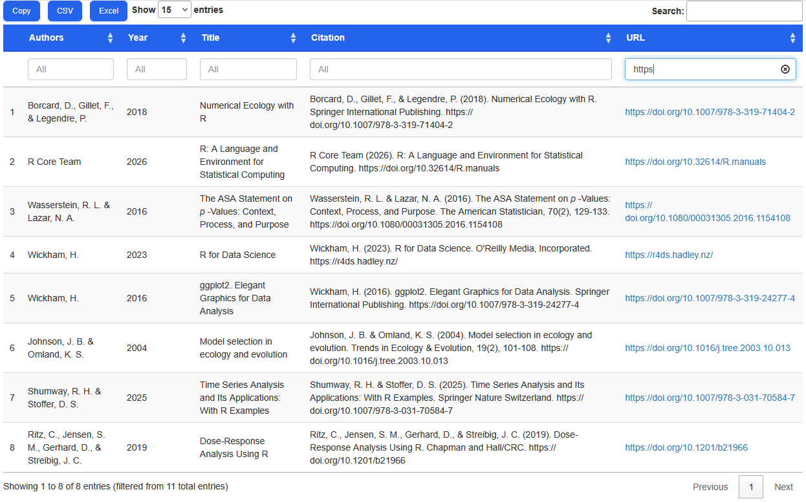

library(biblioview)
# Example: Launching the app locally with demo parameters
if (interactive()) {
launch_dashboard(
group = "0000000",
key = "INVALID_DEMO_KEY",
folder = "DEMO123",
title = "Demo Literature View"
)
}Getting Started with biblioview
*Note:** This vignette is work in progress. It needs screenshots and adaptation to the most recent app versions.
Overview
The biblioview package provides a lightweight, performant Shiny interface to display Zotero bibliographies in real time. Designed for embedding inside Learning Management Systems (LMS) like OPAL, project websites, or intranets, it allows research projects and course instructors to maintain a single source of truth in Zotero without requiring every student or collaborator to hold a Zotero account.
Part 1: Zotero Setup & API Credentials
To stream literature live into biblioview, you need a shared Zotero Group Library and a read-only API Key.
1. Create a Group Library
- Log in to zotero.org and go to Groups Create a New Group.
- Choose a name and set the privacy according to your needs:
- Public, Closed Membership: Recommended for courses (anyone with the link/app can view, only you can edit).
- Private: Strictly hidden from the web; requires an account or an API key to access.
- Note your Group ID from the group’s URL (
zotero.org/groups/<group_id>).
2. Generate an API Key
- Go to Account Settings Feeds/API Create new private key.
- Set key permissions:
- Give it a descriptive name (e.g.,
biblioview-course). - Check Allow library access for your target group.
- Give it a descriptive name (e.g.,
- Copy the generated key string immediately and save it to a secure place.
Security Note: Treat your API key like a password. Avoid hardcoding active API keys into publicly accessible repositories. In production, pass credentials using environment variables or application configuration files.
Part 2: Dynamic URL Parameters
biblioview supports URL parameters (query strings) to control which literature subset is fetched and how the header is rendered. This allows a single Shiny app deployment to serve multiple courses, project modules, or web pages dynamically.
Parameter Reference
| Parameter | Type | Required? | Description | Example Value |
|---|---|---|---|---|
group |
String / Numeric | Yes | The Zotero Group ID containing your library. | 1234567 |
key |
String | Yes | Your Zotero read-only API key. | a1b2c3d4e5f6... |
folder |
String | Optional | The Zotero Collection ID (subfolder) to scope references to a specific module/course. | A1B2C3D4 |
title |
String | Optional | Custom header title displayed above the bibliography table. | Reading%20List |
Constructing the URL
[https://your-shiny-server.org/biblioview/?group=1234567&key=YOUR_API_KEY&folder=A1B2C3D4&title=Course%20Bibliography](https://your-shiny-server.org/biblioview/?group=1234567&key=YOUR_API_KEY&folder=A1B2C3D4&title=Course%20Bibliography)If folder is omitted, biblioview defaults to fetching the entire top-level group library. If title is omitted, it defaults to a standard application header.
Part 3: Embedded Apps & User Workflows
biblioview provides two distinct app interfaces depending on your deployment target.
1. The Full Overview App (Standalone)
Designed for research projects, complex students courses and administrators who need full exploration capabilities.
-
Key Features: Full-text search across titles and authors, expandable abstracts, direct DOI/URL links, and user-defined
Note:-field inextras. - Access data can be entered interactively or provided in the URL.
- Retrieves the available sub-collections (folders) and allows their dynamic selection.
- Supports enrichment of bib entries with citation counts and abstracts, retrieved from Crossref or OpenAlex.

2. The Embedded Reader App (LMS / OPAL / Iframe)
Designed specifically for <iframe> embedding in web pages or learning management (LMS) platforms like OPAL or Moodle.
- Key Features: Compact vertical layout without menus, reduced number of columns, local caching (5 minutes) to reduce Zotero server load, support of customized CSS-styles.
- As it has no sidebar menu, it must always be called with URL parameters.
<!-- Example HTML Module Embed -->
<iframe
src="[https://your-shiny-server.org/biblioview-embed/?group=1234567&key=YOUR_KEY&folder=A1B2C3D4&title=Required%20Readings](https://your-shiny-server.org/bibliotable/?group=1234567&key=YOUR_KEY&folder=A1B2C3D4&title=Required%20Readings)"
width="100%"
height="600px"
frameborder="0">
</iframe>
Testing & Executable Examples
For local development or package testing (R CMD check), mock credentials can be used in combination with offline fallback datasets to ensure vignette compilation without live network calls: